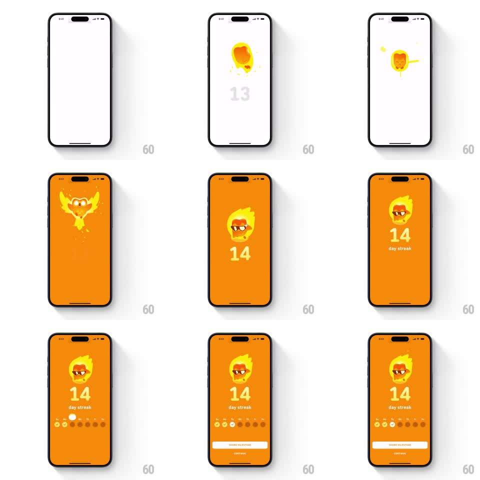

Media
Frame-by-frame

Rebuild this animation 1:1: Duolingo's 14-day streak celebration - the flame erupts and morphs into a phoenix-like Duo on fire wearing sunglasses as the whole screen floods orange, the counter rolls 13 to 14, weekday dots check off, and SHARE MILESTONE plus CONTINUE stack up at the bottom.

Rebuild this animation 1:1: Duolingo's 14-day streak celebration - the flame erupts and morphs into a phoenix-like Duo on fire wearing sunglasses as the whole screen floods orange, the counter rolls 13 to 14, weekday dots check off, and SHARE MILESTONE plus CONTINUE stack up at the bottom. ## Integration Integration: stack-agnostic spec - springs given as stiffness/damping, timed motions as duration + curve; map every value to your framework and animation library of choice. ## Scene Starts white with a dim "13" and a forming flame. End state: full orange screen - flaming Duo head with sunglasses at center, large white "14", "day streak" label, a weekday dot row (S M T W T F S) with the first dots checked, a white SHARE MILESTONE pill and a CONTINUE link at the bottom. ## Motion spec Pattern: full-screen milestone transformation with character morph. - The flame stretches up with spark trails (250ms), then the background floods orange from the center outward (400ms, ease-in). - The flame morphs into the burning Duo head (crossfade through a fireball frame, 300ms); sunglasses slam on (translateY -20pt -> 0, spring ~380/16). - Counter rolls 13 -> 14 (digit slide 250ms) with a scale pulse (1.0 -> 1.25 -> 1.0). - "day streak" fades in; weekday dots pop in left to right (60ms stagger), checkmarks drawing on (stroke draw, 150ms each). - SHARE MILESTONE pill slides up (280ms ease-out), CONTINUE link fades in 100ms later. ## Calibration - The orange flood is the milestone moment - it must read as the screen itself catching fire, not a background color swap. - Duo-on-fire replaces the generic flame; the morph is the celebration. ## Reduced motion Background fades to orange, Duo appears via 200ms crossfade, counter sets, dots appear checked, buttons fade in. ## Don't miss - Two-week dots: exactly the days up to the current weekday get checkmarks; future days stay dim. - SHARE MILESTONE is a white pill, CONTINUE is a plain link under it - different weights.